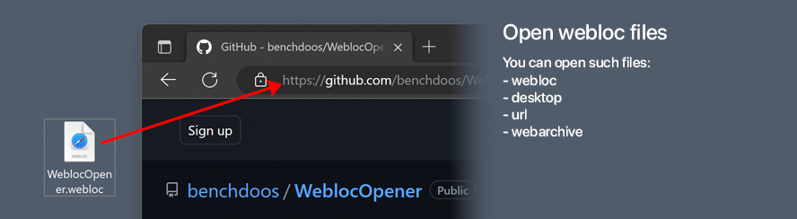
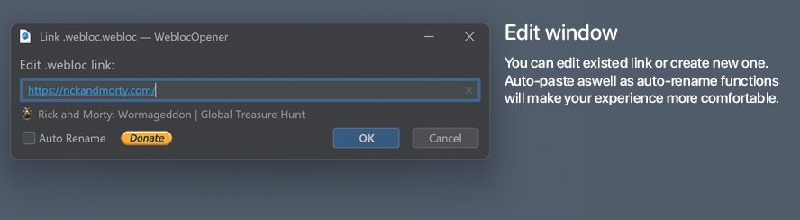
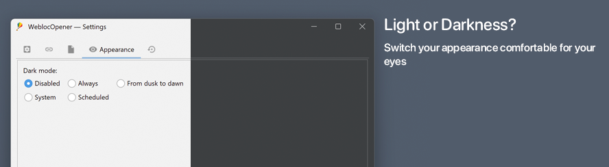

WeblocOpener online
read more
Most of users of WeblocOpener download it to open
.webloc file for one or two times.So why they should do it? What if there will be a new service, based on WeblocOpener project,
that will give the same options?
So I've got an idea: website (or telegram bot) with WeblocOpener options: open, create
.weblocfiles,QR-Code generators with drag-and-drop features.
All of it can be realised, but there is a problem:
Github pages does not support java projects, so I need a new hosting (with domain name in case of website).
Good hosting with good options cost for 1-2 year of using:
$250 - $500.If you want me to realise this idea, please donate, and when it's ready - you will be able
to operate with
.webloc files without downloading the app.P.S. There is a pool in WeblocOpener's telegram channel. If we imagine, that I have all money
I needed to make WeblocOpener online possible, what it should be: a website or a telegram bot.
Link to a pool: link.
Introduction:
WeblocOpener is a simple way to open, edit, create MacOS Safari .webloc files on Windows and Debian
GNU/Linux.
Breaking News ⚠️
Hello everyone!
Today I have an announcement for you. I’m happy to announce that @WeblocOpenerBot for telegram is now available!
There will be no need to install desktop version of WeblocOpener if you have to convert only some links.
Bot still being in development for that time trial plan is active for everyone!
It is expected to have at least 1 premium paid plan with fewer restrictions for converting. Other users will be available to convert some links for free. For most of the users it will be enough, if you’re not using it commercially or you want to support the project.
What is .webloc file?
.webloc extension is usually means that in front of you is a MacOS Safari web-url.
Actually it is a text document, formatted to property list — PLIST 1.0
(see).
You can open it with any text-editor (like notepad on Windows) to find out the url, saved in
.webloc file.
But if you need to open a big number of files or open them often — using text-editor wouldn't be the fastest and
the easiest solution.
So that's why I want to offer you — WeblocOpener.
Features
What can WeblocOpener do?
-
WeblocOpener gives full MacOs
.weblocfiles support on Windows and Debian GNU/Linux.
-
Open
.webloc.desktop.url.webarchivefiles.  -
Choose whatever browser you want. Open in browser from preset or use custom.
Browsers in preset:
and more... or you can use your custom browser.
You can use any custom browser by your own with custom call.
- WeblocOpener provides multiple abilities to operate with supported formats.
-
Convert
.weblocto.urlto.desktopand backward by using drag and drop on settings window. Also, you can convert.webarchivefiles into.htmlwebpages.
-
Create new
.weblocfiles. Created files are fully supported by Safari on MacOS and WeblocOpener on Windows.
- Edit existed files. Change links when you need it. 
- Dark mode will protect your eyes at night. It turns on automatically scheduled or by your location. Check out in settings how to customize it for yourself. 
-
Settings window can not only change settings of application, but also convert files.

-
Open and convert
.webarchiveusing drag and drop on settings window.
-
You can generate QR-Code for stored link to open in on your smartphone.

-
When there will appear new features - auto-updater tool can notify you.

- Supported languages: EN IT RU DE FR
What can do WeblocOpener on Windows?
What can do WeblocOpener on Debian GNU/Linux?
Contact me then!
- My telegram account: @incredible_bd
- Visit WeblocOpener telegram channel to be up-to-date.
- Visit WeblocOpener twitter page to contact me.
- Send me an e-mail to report a problem: weblocopener@gmail.com
- Leave an issue to github
System Requirements
| Type | Requirements |
|---|---|
| Operating system | Windows 7, 8, 10, 11 Debian GNU/Linux |
| Hard drive | 100 MB free hard disk space |
| Additional software | Java 17 required. Temurin JRE recommended. |
Supported features
| Feature | |||
|---|---|---|---|
| Open | |||
| Edit | |||
| Create new | |||
| Generate QR-Code | |||
| Instant URL, QR-Code copy | |||
.webloc support |
|||
.desktop support |
|||
.url support |
|||
Convert .webloc, .url, .desktop, .webarchive |
|||
| Auto-update | |||
| Open in not default browser | |||
| Switch browser to open for each file |